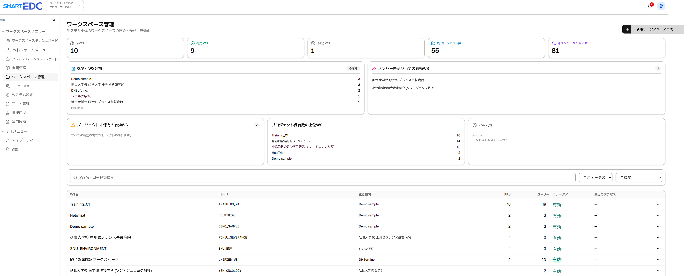
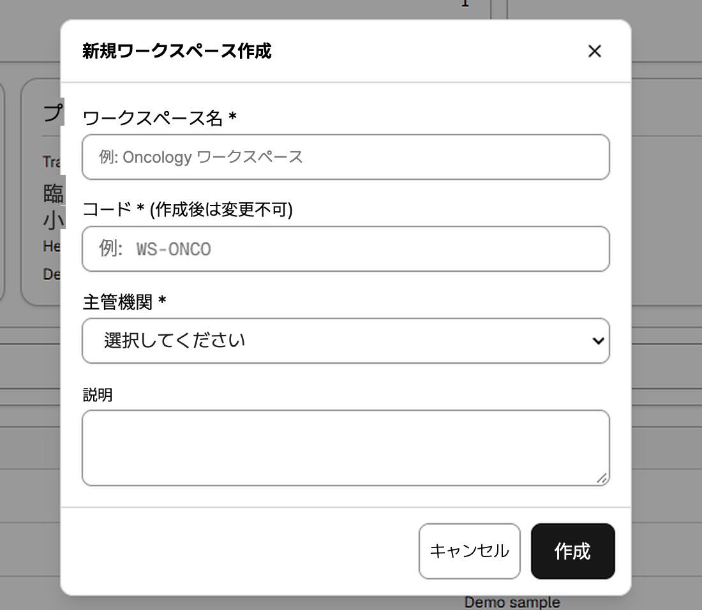
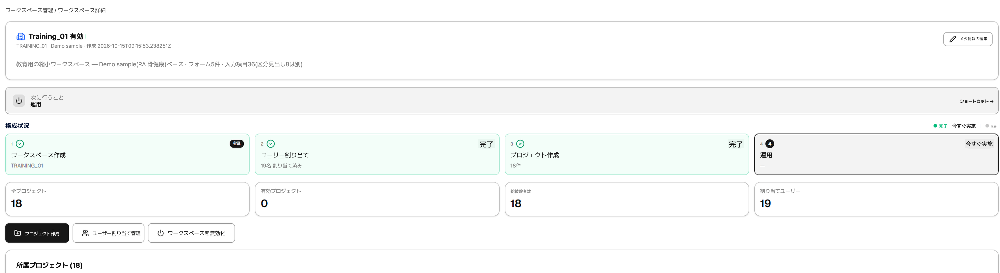
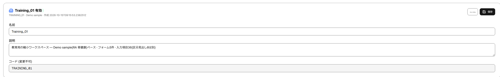
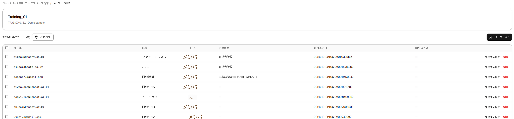
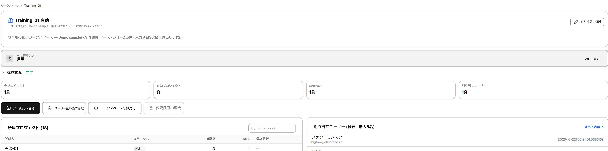
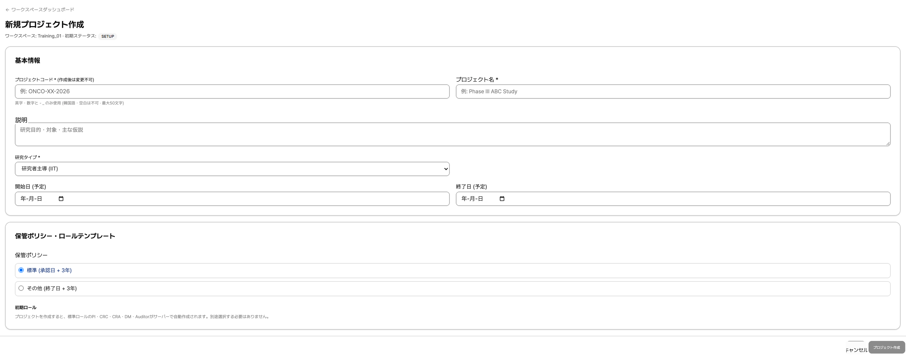
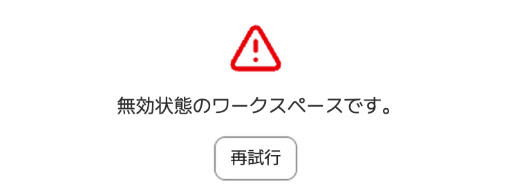

ワークスペース
SCR-WS-002 · 管理一覧 · 作成 · 詳細 · ユーザー割り当て · ダッシュボード
ワークスペース管理
- 1.1画面構成
- 1.2新規ワークスペース作成
1.1画面構成
概要
システム全体のワークスペースを管理する画面です。ワークスペースはプロジェクトを入れる器であり、ユーザー割り当ての単位でもあるため、研究を始めるにはまずここでワークスペースを作成する必要があります。
画面説明

左のメニューのワークスペース管理から入ります。
新規ワークスペース作成 — ワークスペースを新しく作成します 1.2。
集計 — 全体・有効・無効のワークスペース数、総プロジェクト数、総メンバー割り当て数です。
検索とフィルター — 名前やコードで探し、ステータスと主管機関で絞り込みます。
副題にはこの画面の範囲が示されます — システム全体での照会・作成・無効化です。
状況カード — 機関別の分布、メンバーが割り当てられていない有効なワークスペース、プロジェクトがない有効なワークスペースなど、手を入れるべき箇所を先に示します。
表には名前・コード・主管機関・プロジェクト数・ユーザー数・ステータス・最近のアクセスが表示されます。名前を選択すると詳細に移動します 2.1。
行の右端の ⋯ には詳細表示 · ユーザー割り当て · 無効化（無効のワークスペースでは有効化）があります。このメニューはシステム管理者にのみ表示されます。
注意事項
誤解しやすい動作
- • ワークスペースの作成・無効化はシステム管理者のみ行えます。ワークスペース管理者は、自分に割り当てられたワークスペースを照会のみできます。
- • ワークスペース管理者には、行の右端の ⋯ メニュー自体が表示されません。項目だけが無効のまま残るのではなく欄が空になっているため、詳細とユーザー割り当ては名前を直接選択して入ります 2.1 · 3.1。
1.2新規ワークスペース作成
概要
ワークスペースを新しく作成します。*が付いた3項目は必ず入力する必要があり、作成すると直ちに詳細画面に移動します。
画面説明

ワークスペース名 — ユーザーに表示される名前です。後から変更できます 2.2。
コード — ワークスペースを区別する固有のコードです。ラベルに書かれているとおり、作成後は変更できないため、慎重に決めてください。
主管機関 — このワークスペースを主管する機関を選択します。一覧になければ、先に機関管理で登録する必要があります。
作成 — ワークスペースを作成します。
説明 — 任意の項目です。どの研究を扱うワークスペースかを書いておくと、一覧で区別しやすくなります。
ウィンドウの外を選択するか、閉じるを選択すると、入力内容は破棄されます。
注意事項
必須確認 データ破損 · フォーム完了不可
- • コードは作成後に変更できません。組織のコードのルールを先に確認してから入力してください。
ワークスペース詳細
- 2.1画面構成
- 2.2メタ情報の編集
- 2.3ユーザー · アクティビティ · 削除
2.1画面構成
概要
単一ワークスペースの全体情報と、やるべきことをまとめて表示します。構築がどこまで進んだか、次に何をすべきかが一目で分かります。
画面説明

メタ情報の編集 — 名前と説明を修正します 2.2。
ショートカット — 次に行うこととして示されたステップの画面に移動します。
プロジェクト作成 — このワークスペースにプロジェクトを作成します 3.3。
ユーザー割り当て管理 — ワークスペースのメンバーを管理します 3.1。
ワークスペースを無効化 — ステータスを無効に変更します。
ヘッダーに、名前・有効状態・コード・主管機関・作成日時と説明が表示されます。
構成状況 — ワークスペース作成 → ユーザー割り当て → プロジェクト作成 → 運用の4段階です。各ステップのカードを選択しても、該当画面に移動します。
集計 — 全体・有効なプロジェクト数、総被験者数、割り当てユーザー数です。
注意事項
誤解しやすい動作
- • 有効なプロジェクトが0件でも、全体のプロジェクトは存在する場合があります。構築段階（設定中）のプロジェクトは、有効として集計されません。
2.2メタ情報の編集
概要
名前と説明を修正します。別の画面には移動せず、詳細画面のヘッダーカードがその場で入力状態に変わります。
画面説明

名前 — 表示される名前を修正します。
説明 — ワークスペースの説明を修正します。
保存 — 変更した内容を反映します。
キャンセル — 変更を破棄して、参照状態に戻ります。
コードはラベルに「（変更不可）」が付き、背景がグレーで、選択できません。
注意事項
誤解しやすい動作
- • 名前を変更すると、このワークスペースを使うすべてのユーザーの画面に即座に反映されます。運用中であれば、変更したことをメンバーに知らせてください。
2.3ユーザー · アクティビティ · 削除
概要
詳細画面の下部には、メンバーの概要と活動の記録、そして削除の領域があります。削除は条件が厳しいため、通常は無効化を使います。
画面説明

すべて表示 — 割り当てユーザー全員を管理する画面に移動します 3.1。
ワークスペース削除 — 条件を満たしていない場合は選択できません。
割り当てユーザーは概要のため、最大5名まで表示されます。
最近のアクティビティ — このワークスペースで行われた変更が、新しい順に表示されます。誰がいつ何を変更したかを確認できます。
削除がブロックされている場合は、その理由が案内されます。キャプチャは、無効化が先に行われていない場合です。
注意事項
必須確認 データ破損 · フォーム完了不可
- • 削除できるのは、無効状態で、所属プロジェクトがすべて構築段階であるか、存在しない場合に限られます。ワークスペースと下位の構成は物理的に削除されるため、元に戻せません。運用していたワークスペースは削除せず、無効化してください。
続く画面
- 3.1ユーザー割り当て管理
- 3.2ワークスペースダッシュボード
- 3.3新規プロジェクト作成
- 3.4無効なワークスペースへのアクセス
3.1ユーザー割り当て管理
概要
ワークスペースにユーザーを割り当てたり、割り当てを解除したりする画面です。ここで割り当てられたユーザーだけが、このワークスペースのプロジェクトに参加できるため、プロジェクトのロール割り当てより先に行います。
画面説明

ユーザー追加 — ワークスペースにユーザーを割り当てます。
変更履歴 — 割り当てと解除の記録を照会します。
管理者に指定 — 該当ユーザーをワークスペース管理者に昇格させます。
解除 — ワークスペースから割り当てを外します。
ヘッダーのパンくずから、上位の画面に戻ることができます。
ロール列は、ワークスペース内での立場（メンバーまたは管理者）です。プロジェクト内でのロール（研究者・臨床開発モニターなど）とは別のものです。
この画面へのほかの経路
- • ワークスペース管理の一覧 → 行の右端の ⋯ → ユーザー割り当て（システム管理者のみ）
- • ワークスペース詳細 → ユーザー割り当て管理ボタン
- • ワークスペース詳細 → 構成状況の2. ユーザー割り当てステップカード
- • ワークスペース詳細 → 割り当てユーザーの概要のすべて表示
- • ワークスペースダッシュボード → 上の3か所と同じ位置 3.2
- • プロジェクトの研究者配置画面 → メンバーが不足しているときに案内されるリンク
注意事項
必須確認 データ破損 · フォーム完了不可
- • ワークスペースから解除すると、そのユーザーのプロジェクトでのロールも一緒に切れます。進行中の業務がないかを確認してから解除してください。
3.2ワークスペースダッシュボード
概要
構成状況の運用段階から移動する画面であり、同時に、すべてのロールがワークスペースに入ったときに最初に表示される画面でもあります。管理者の経路の詳細画面とほぼ同じ構成ですが、見る人の権限によって表示される範囲が変わります。
画面説明

ショートカット · メタ情報の編集 · 集計は詳細画面と同じです 2.1。
プロジェクト作成 — 詳細画面の同じボタンです 3.3。
ユーザー割り当て管理 — 詳細画面の同じボタンです 3.1。
変更履歴の照会 — 権限がない場合は選択できません。
移動経路がワークスペース ›で始まります — 管理経路のワークスペース管理 /とは異なります。今どちらにいるのかを、ここで区別してください。
構成状況は折りたたまれた状態で表示され、選択すると4段階が展開されます。
所属プロジェクトには検索があり、参加機関数の列も一緒に表示されます。
この画面へのほかの経路
- • ワークスペース一覧でワークスペースを選択
- • プラットフォームホームの続きから（最近のアクセス）または自分のプロジェクト
- • 画面上部のコンテキスト切り替えでワークスペースを選択
- • 左のメニューのワークスペースダッシュボード
- • ワークスペースを切り替える際に経由する案内画面
- • ワークスペース詳細 → 構成状況の4. 運用ステップ、またはショートカット
注意事項
誤解しやすい動作
- • 権限によって表示される内容が異なります。一般メンバーには、メンバー一覧・構成状況・最近のアクティビティが表示されないため、画面が違って見えてもエラーと判断しないでください。
3.3新規プロジェクト作成
概要
ワークスペースの中にプロジェクトを作成します。プロジェクトは設定中ステータスで作成され、構築を終えた後に運用ステータスへ移します。
画面説明

プロジェクトコード — プロジェクトを区別する固有のコードです。ラベルに書かれているとおり、作成後は変更できません。
プロジェクト名 — ユーザーに表示される名前です。
研究タイプ — 研究者主導などから選択します。
保管ポリシー — データをどのくらいの期間保管するかを決めます。デフォルト値は標準です。
プロジェクト作成 — 必須項目がすべて入力されるまで、無効の状態が続きます。
ヘッダーに、対象のワークスペースと初期ステータスが案内されます。
コード入力欄の下に、使用できる文字と長さの制限が案内されます。
初期ロールは選択しません — プロジェクトを作成すると、標準ロールがシステムにより自動で作成されます。
この画面へのほかの経路
- • ワークスペース詳細またはダッシュボード → プロジェクト作成ボタン
- • ワークスペース詳細またはダッシュボード → 構成状況の3. プロジェクト作成ステップカード
- • 所属プロジェクトが1つもないとき、一覧の位置に表示される案内ボタン
注意事項
誤解しやすい動作
- • 無効なワークスペースではプロジェクトを作成できません。構成状況の該当ステップとボタンは、すべてロックされます。
3.4無効なワークスペースへのアクセス
概要
無効状態のワークスペースに入ろうとすると、内容は表示されず、案内だけが残ります。誤ったアクセスではなく、そのワークスペースが無効であることを意味します。
画面説明

再試行 — もう一度読み込みます。ワークスペースが再び有効化された後に使ってください。
「無効状態のワークスペースです。」という案内文が表示されます。画面全体がこの案内に置き換わるため、一覧や集計は表示されません。
注意事項
誤解しやすい動作
- • 無効化は元に戻せます。システム管理者がワークスペース管理一覧の行の ⋯ メニューから有効化すると、すぐに復旧します 1.1。